Kimi K2.5：视觉智能体智能
论文发布日期
作者： Kimi 团队
模型： Kimi-K2.5
原文： arXiv:2602.02276
摘要
本文介绍 Kimi K2.5，一个面向通用智能体智能的开源多模态智能体模型。K2.5 强调文本与视觉的联合优化，让两种模态相互促进；核心方法包括文本-视觉联合预训练、零视觉监督微调和文本-视觉联合强化学习。
在这一多模态基础之上，K2.5 引入 Agent Swarm：一个能够自主分解复杂任务、动态创建异构子智能体并行执行的编排框架。大量评测表明，Kimi K2.5 在代码、视觉、推理和智能体任务上取得领先结果；Agent Swarm 相比单智能体还可将延迟最多降低 4.5 倍。团队公开后训练检查点，希望推动智能体智能研究和现实应用。
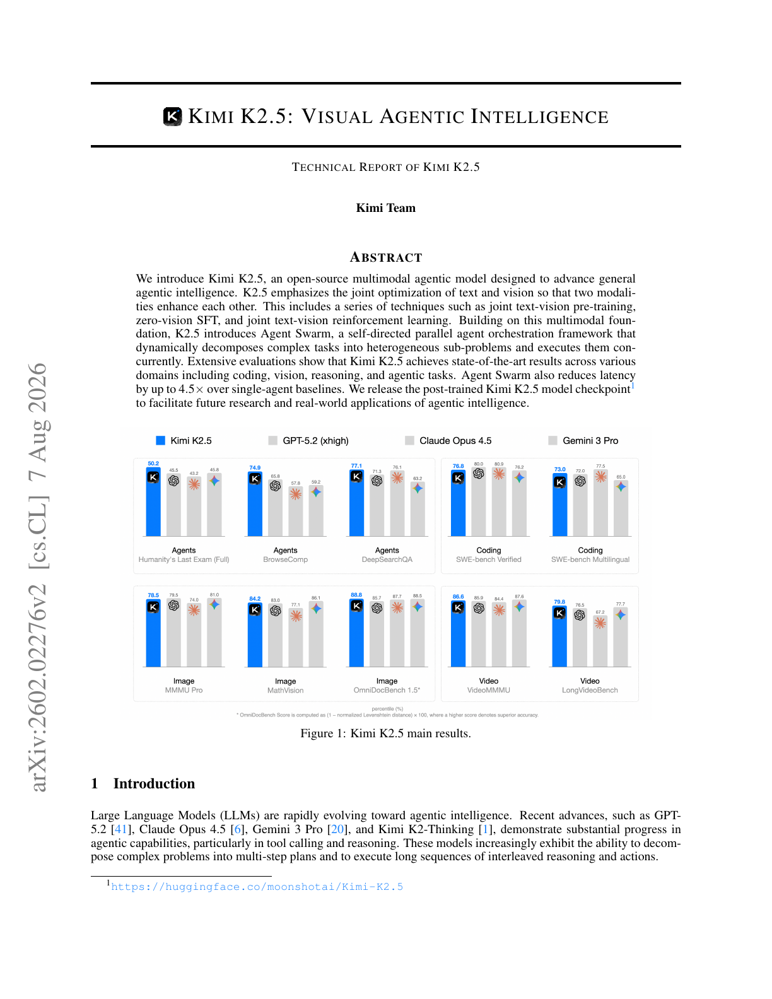
1 引言
大型语言模型正在走向智能体智能。前沿模型已经能够把复杂问题拆成多步计划，并交替执行长链推理与行动，但两个瓶颈仍然突出：一是视觉能力常被后期附加到文本骨干上，模态之间可能彼此干扰；二是工具调用仍以串行为主，推理步数越多，完成时间几乎线性增长。
Kimi K2.5 从两条路线改进 Kimi K2：
- 联合优化文本与视觉。 在固定图文词元预算下，较低视觉比例的早期融合优于训练后段才注入大量视觉词元。K2.5 因而从训练开始就以稳定比例混合图文数据。
- 并行智能体编排。 Agent Swarm 不依赖预先写死的并行规则，而是通过强化学习学会何时拆分、如何拆分、创建多少子智能体以及怎样调度。
架构上，K2.5 使用原生分辨率视觉编码器 MoonViT-3D。它采用 NaViT 的打包策略接收可变分辨率图像；处理视频时，每四个连续帧形成一个时空块，经共享编码器处理后在补丁层面做时间池化。因此图像与视频完全共享权重，而同一上下文窗口可容纳最长约四倍的视频。
后训练阶段提出“零视觉 SFT”：只使用高质量文本监督数据，就能激活视觉推理与视觉工具调用。加入人工设计的视觉轨迹反而可能损害泛化；这是因为联合预训练已经建立较强的图文对齐，文本能力能够自然迁移到视觉。随后进行的图文联合强化学习不仅提升视觉任务，还改善 MMLU-Pro、GPQA-Diamond 等纯文本任务，形成“文本启动视觉、视觉反哺文本”的双向促进。
Agent Swarm 则通过并行智能体强化学习（PARL）训练一个编排器。子智能体由固定的中间策略检查点实例化，训练时保持冻结，其轨迹不进入优化目标；只有编排器接受强化学习更新。这种解耦减少了多智能体端到端训练中的信用分配歧义与不稳定。在广域搜索任务中，它把 Item-F1 从单智能体的 72.8% 提高到 79.0%，同时最多降低 4.5 倍延迟。
K2.5 最终把视觉与语言、思考与即时模式、对话与智能体统一在一个体系中。
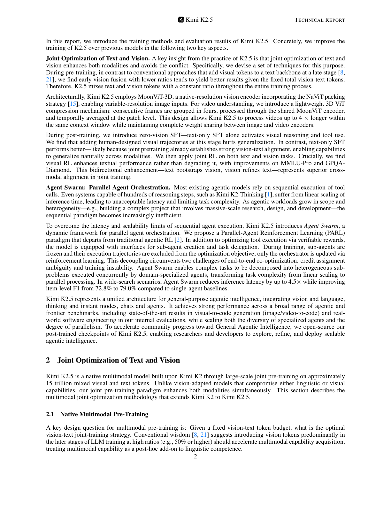
2 文本与视觉的联合优化
Kimi K2.5 从 Kimi K2 出发，继续使用约 15 万亿混合图文词元进行大规模联合预训练。目标不是用视觉适配牺牲语言能力，而是让两种模态同时增强。
2.1 原生多模态预训练
常见做法是在语言模型训练后段才以 50% 或更高比例加入视觉词元，把多模态能力当作语言能力之上的附加层。团队在保持总图文词元预算不变的条件下，同时改变视觉注入时点与图文比例，得到相反结论：最终多模态性能对视觉比例并不十分敏感，而从一开始采用 10% 视觉、90% 文本的低比例融合，整体表现最好。
表 1 中，早期 10:90 融合在视觉知识、视觉推理、OCR、文本知识、文本推理和代码上分别为 25.8、43.8、65.7、45.5、58.5、24.8，整体优于中期 20:80 与后期 50:50。较温和但持续时间更长的联合优化，有利于模型自然形成平衡的跨模态表征。
2.2 零视觉监督微调
预训练视觉语言模型不会自然掌握视觉工具调用，导致多模态强化学习缺少冷启动能力。传统方案依赖人工标注或提示工程生成的视觉思维链，但这类数据多样性有限，往往只覆盖裁剪、旋转、翻转等简单操作。
K2.5 改用纯文本 SFT 激活视觉智能体能力，并让图像操作通过 IPython 中的程序化处理完成。模型由此可以把通用代码工具迁移到像素级任务，例如通过二值化和计数估计物体大小，也能泛化到定位、计数和 OCR。实验中，文本-视觉混合 SFT 反而明显弱于零视觉 SFT，可能正是由于高质量视觉轨迹不足。
2.3 文本-视觉联合强化学习
零视觉 SFT 后，模型有时仍会忽略图像。团队因此在必须理解视觉输入才能得到正确答案的任务上执行结果式强化学习，覆盖三类数据：
- 视觉定位与计数；
- 图表、文档理解与文字抽取；
- 必须依赖图像的数学和科学问题。
这些轨迹还可用于拒绝采样微调，形成自我改进的数据流水线。
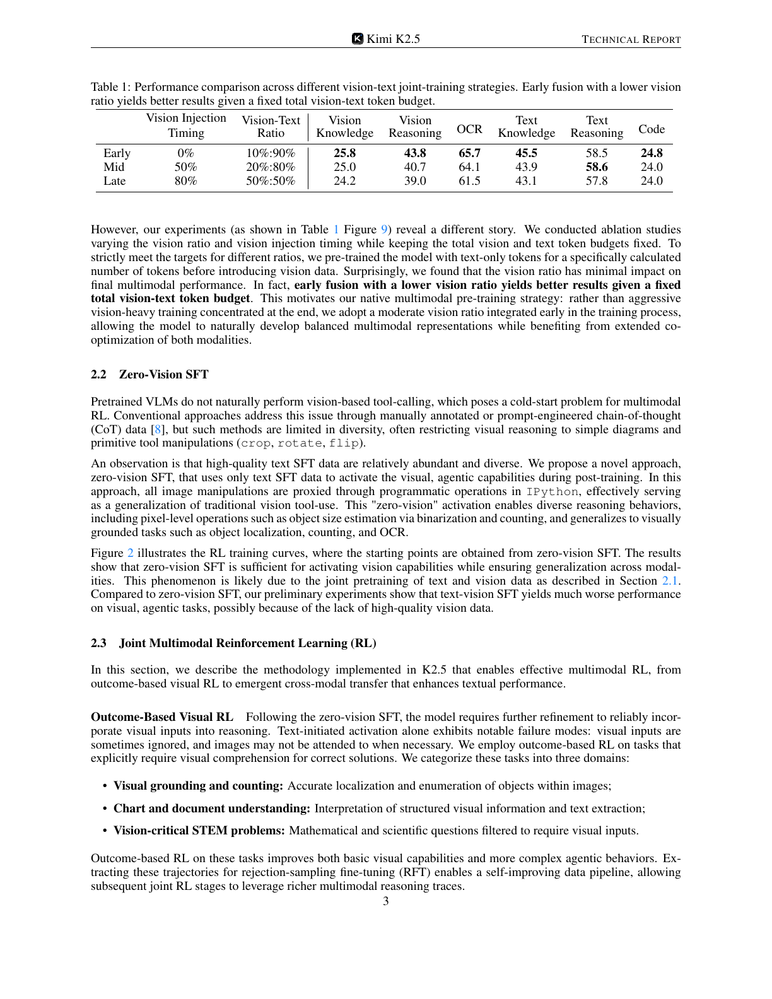
从零视觉 SFT 起点继续增加视觉 RL 计算量时，MMMU-Pro、MathVision、CharXiv 和 OCRBench 均持续上升。更重要的是，视觉强化学习同时改善了纯文本能力：MMLU-Pro 从 84.7 提高到 86.4，GPQA-Diamond 从 84.3 提高到 86.4，LongBench v2 从 56.7 提高到 58.9。分析认为，视觉 RL 强化了结构化信息提取与校准能力，进而降低计数、OCR 式文本问题中的不确定性。
因此，K2.5 不按输入模态划分强化学习专家，而是按知识、推理、代码、智能体等能力域组织训练。每个领域同时接收纯文本与多模态问题，生成式奖励模型也跨模态评价异构轨迹，使任一模态获得的能力尽可能迁移到另一模态。
3 Agent Swarm
单智能体逐步推理和调用工具时，实际推理深度、上下文与调用预算很快耗尽。K2.5 为此提出 Agent Swarm 和并行智能体强化学习（PARL），让模型动态完成任务分解、子智能体实例化和并行调度。训练不预设“并行一定更好”，而是通过环境反馈学习是否并行、何时并行和怎样并行。
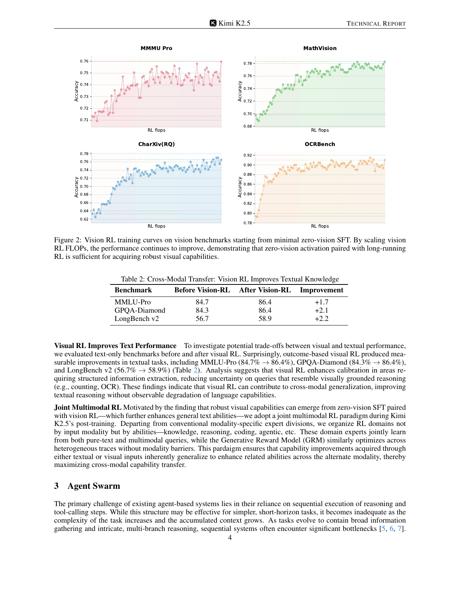
3.1 架构与学习设置
PARL 由可训练编排器和冻结子智能体组成。结果奖励通常稀疏且含噪：最终答案正确不代表每个子任务都执行完美，失败也不意味着所有子智能体都出错。冻结子智能体、把其输出视为环境观测，可以把高层协调逻辑和底层执行能力解耦，改善收敛稳定性。训练先使用较小子智能体，再切换到更大模型；系统还能动态调整编排器与子智能体的推理实例比例，提高集群利用率。
3.2 PARL 奖励
总奖励由三部分组成：
$r_{perf}$ 评价任务整体成功率和解答质量；$r_{parallel}$ 鼓励创建子智能体，避免策略坍缩成串行执行；$r_{finish}$ 奖励子任务真正完成，防止编排器为了刷并行指标而无意义地大量生成子智能体。随着训练进行，$\lambda_1$ 与 $\lambda_2$ 逐渐退火到零，使最终策略回到以任务表现为主目标。
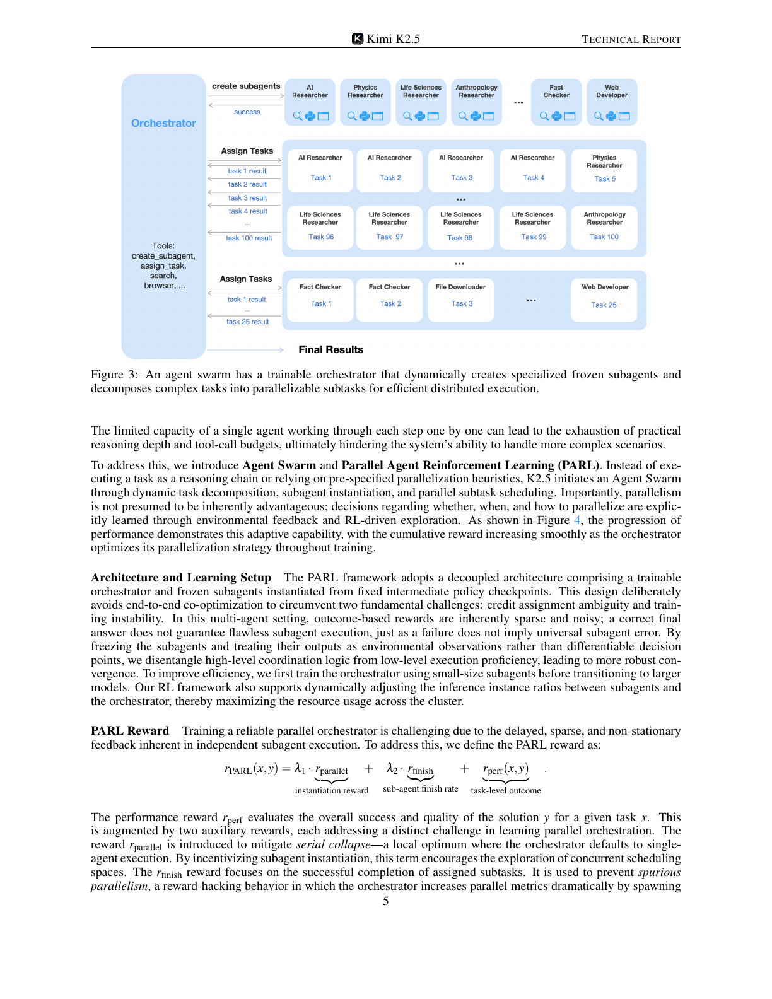
3.3 以关键步数约束资源
并行系统不能用所有智能体步数之和衡量耗时。论文借鉴计算图关键路径，把每个执行阶段的耗时定义为主智能体步数加该组并行子智能体中最长分支的步数：
这一指标不会奖励只增加工作总量的伪并行；只有均衡分解任务、缩短最长分支，才能减少关键步数和端到端延迟。
为了诱导并行能力，训练提示集中覆盖广域搜索、需要延迟汇总的多分支深度搜索、长文档分析和大规模文件下载。提示本身不要求模型并行，而是让串行策略难以在固定推理步数和调用预算内完成，促使编排器自主发现更有效的并行方案。
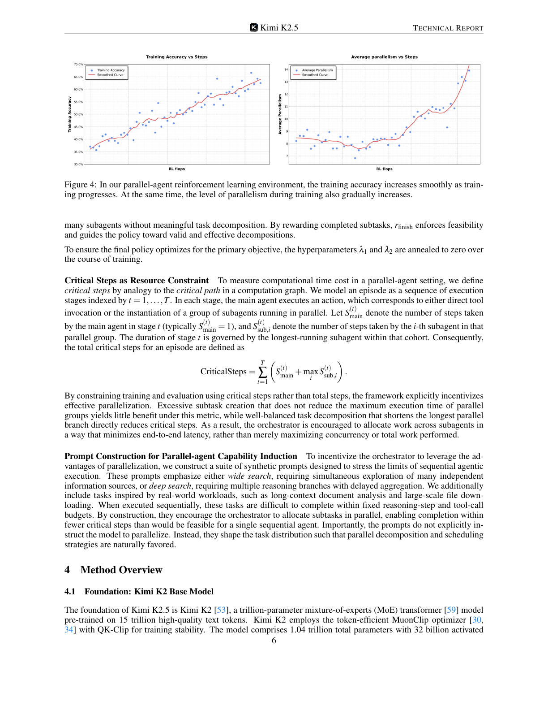
4 方法总览
4.1 基础模型：Kimi K2
K2.5 以 Kimi K2 为基础。K2 是使用约 15 万亿高质量文本词元预训练的万亿参数 MoE Transformer，采用带 QK-Clip 的 MuonClip 优化器。模型总参数 1.04 万亿，每个词元激活 320 亿参数；共有 384 个专家，每个词元激活 8 个，稀疏度为 48。
4.2 模型架构
多模态架构由 MoonViT-3D、MLP 投影器与 Kimi K2 MoE 语言模型构成。
MoonViT 从 SigLIP-SO-400M 初始化，按原始分辨率切分图像补丁，再采用 NaViT 的打包方法把不同分辨率图像串接为一维序列。MoonViT-3D 将这一理念扩展到时间维：最多四个连续帧共同组成时空体，二维补丁在同一序列中接受统一注意力；投影前进行轻量时间池化，获得四倍视频压缩。这样，高速运动和视觉特效可利用额外的时间注意力，而静态图像能力也能通过完全共享的参数空间迁移到视频。
4.3 预训练流水线
预训练分三阶段：
- 视觉编码器训练。 在图文、视频-文本对上继续训练 MoonViT-3D，目标包括替代文本、合成图像和视频描述、定位框、OCR 与视频数据。第一阶段用约 1 万亿词元把视觉编码器对齐到 Moonlight-16B-A3B，第二个很短的阶段只更新 MLP 投影器，使其平滑接入万亿参数语言模型。
- 图文联合预训练。 从接近完成的 Kimi K2 检查点继续，以 4096 序列长度训练约 15 万亿图文词元，同时提高代码数据权重、控制各来源最大训练轮数。
- 长上下文中期训练。 加入高质量长文本、长视频、推理和长思维链数据，使用 YaRN 逐步把上下文从 32768 扩展到 262144；阶段词元量约为 5000 亿再到 2000 亿。
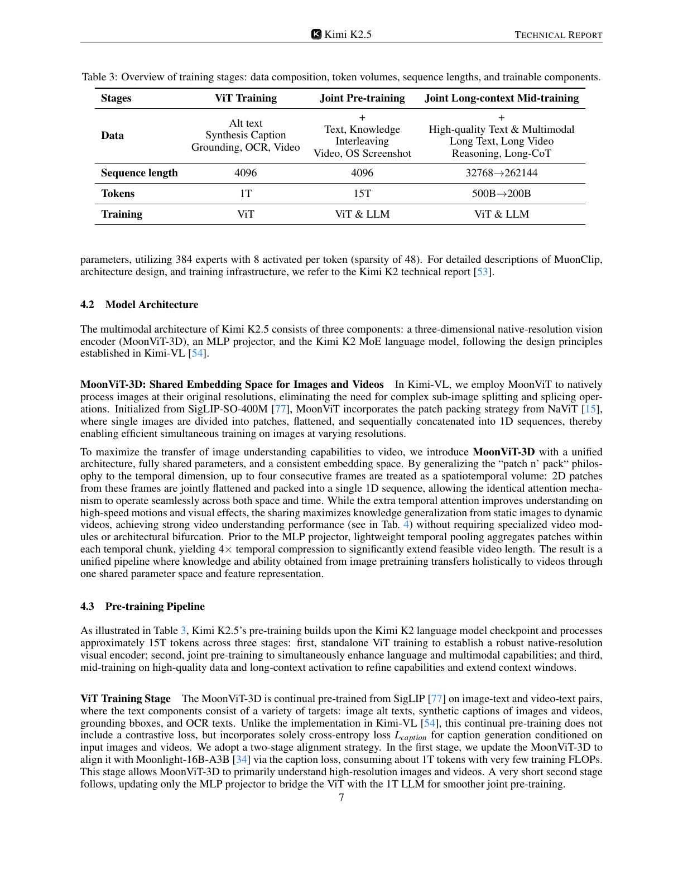
4.4 后训练
4.4.1 监督微调
SFT 延续 Kimi K2 流水线，由 K2、K2 Thinking 和内部专家模型生成候选回答。不同领域分别结合人工标注、提示工程和多阶段验证，形成大规模、多样且包含复杂推理轨迹的指令数据，使模型更重视交互式推理与精确工具调用。
4.4.2 强化学习
文本-视觉联合 RL 与 PARL 共用统一智能体强化学习环境。每个问题从旧策略采样多个回答，使用组内平均奖励作基线，并在词元级根据新旧策略对数比率进行梯度屏蔽：比率落在设定区间内的词元正常计算策略梯度，区间外梯度归零。这不同于标准 PPO 的优势符号相关裁剪，目的是直接限制训练与推理框架差异放大的离策略漂移；对长时程、多步工具任务尤其重要。
可验证任务使用规则化结果奖励，并加入预算控制以提高词元效率。开放任务使用生成式奖励模型（GRM），依据帮助性、响应准备度、语境相关性、细节程度、产物审美和指令遵循等细粒度标准评分。视觉定位和点选采用基于 IoU 或高斯距离软匹配的 F1；轮廓分割使用栅格化掩码 IoU；OCR 使用归一化编辑距离；计数按预测与真值的绝对差奖励；复杂视觉谜题则由 Kimi K2 验证。
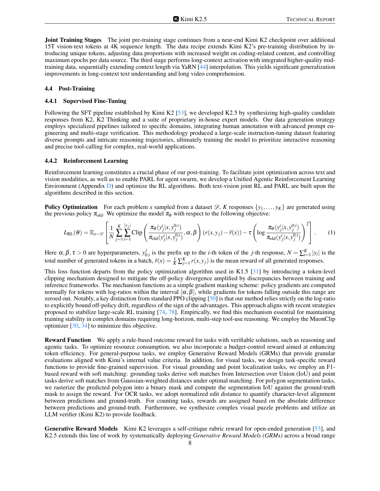
4.4.3 词元高效强化学习
固定预算训练虽然能减少冗长思维链，却容易“长度过拟合”：模型习惯截断推理，得到更多测试时词元也不会有效使用。论文提出 Toggle，在两种阶段间周期交替：
- 预算限制阶段。 仅当某题平均正确率超过阈值时，才要求回答落在按正确样本长度分位数估计的题目预算内，避免过早以质量换效率。
- 标准缩放阶段。 允许生成至最大上限，保持模型利用更多测试时计算解决难题的能力。
在 K2 Thinking 上，Toggle 几乎不损伤性能，却让各基准平均输出长度减少 25% 到 30%，重复核验和机械计算也明显变少；即使只用数学和编程数据训练，GPQA 和 MMLU-Pro 仍能获得跨领域的词元节省。
4.5 训练基础设施
K2.5 基本沿用 K2 的训练系统，并增加解耦编码器进程（DEP）。常规流水线把视觉编码器和文本嵌入都放在第一个阶段，但图像数量和分辨率不断变化，会造成该阶段计算与显存剧烈波动，也妨碍直接复用纯文本训练的成熟并行策略。
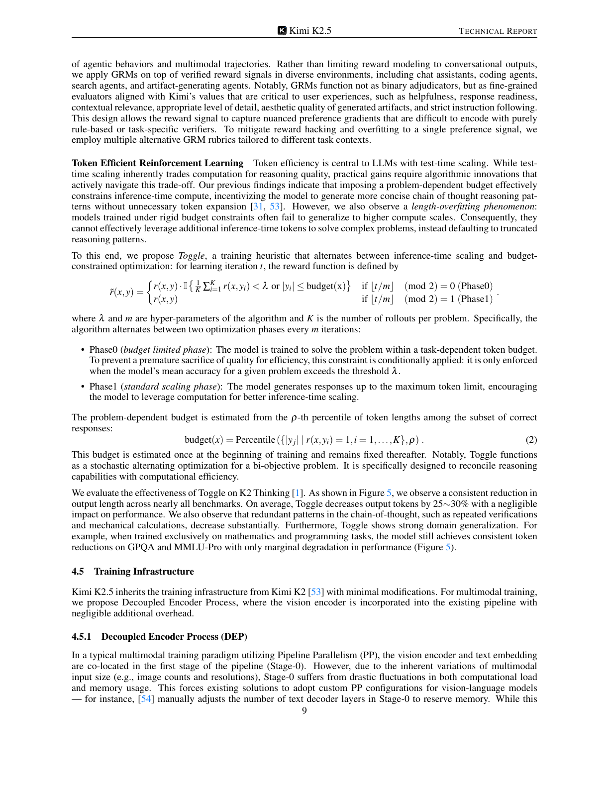
4.5.1 解耦编码器进程
DEP 每个训练步分三阶段：
- 均衡视觉前向。 在全局批次上先处理全部视觉数据。视觉编码器较小，因此复制到所有 GPU，并按图像数或补丁数均衡分配负载；中间激活全部丢弃，只把最终输出汇聚到流水线第 0 阶段。
- 骨干训练。 主 Transformer 正常前向和反向，完全复用纯文本高效并行方案，并在视觉编码器输出处积累梯度。
- 视觉重计算与反向。 重新执行视觉前向，再为视觉编码器参数计算反向梯度。
DEP 同时实现负载均衡，并把视觉编码器与主干的优化策略解耦。K2.5 由此无缝继承 K2 并行配置，多模态训练效率达到纯文本训练的约 90%。
5 评测
5.1 主要结果
5.1.1 评测设置
评测覆盖通用推理、竞赛和智能体编程、图像与视频理解、自主智能体执行以及计算机操作。默认采样温度 1.0、top-p 0.95、上下文 256K；无公开分数的对比模型以相同条件重测并标星，完整设置见附录 E。
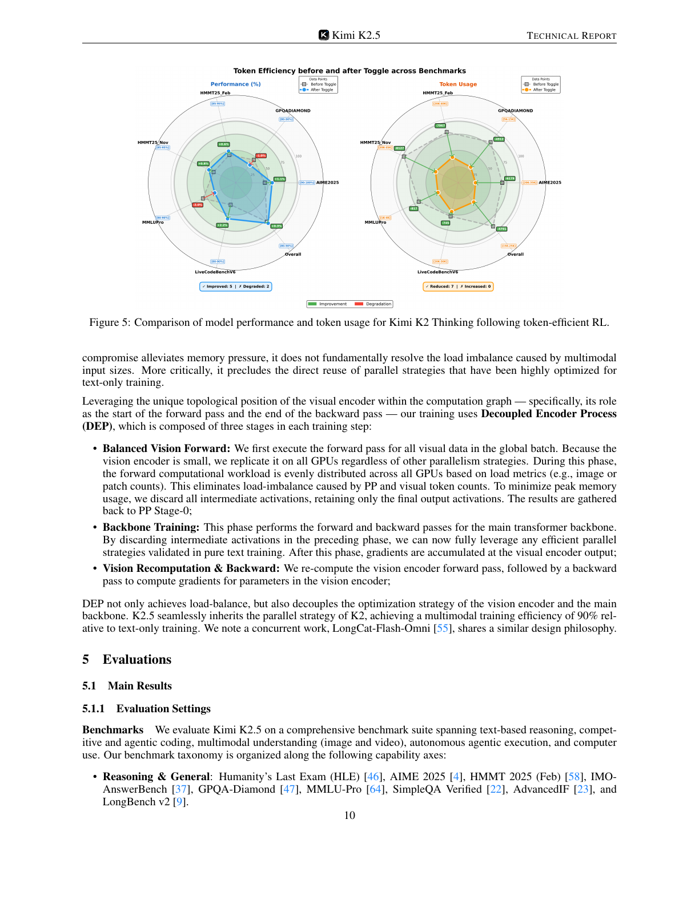
5.1.2 评测结果
推理与通用能力。 K2.5 在 AIME 2025、HMMT 2025 二月赛、IMO-AnswerBench、GPQA-Diamond 上分别达到 96.1、95.4、81.8、87.6。HLE-Full 不用工具时为 30.1，启用工具后升到 50.2，超过表中 Gemini 3 Pro 的 45.8 与 GPT-5.2 的 45.5。AdvancedIF 为 75.6，LongBench v2 为 61.0。
代码与软件工程。 SWE-Bench Verified 为 76.8，SWE-Bench Multilingual 为 73.0，LiveCodeBench v6 为 85.0；Terminal Bench 2.0、PaperBench CodeDev、SciCode 分别为 50.8、63.5、48.7。CyberGym 达到 41.3，显示模型能根据高层漏洞描述定位真实开源软件中的既有缺陷。
智能体能力。 BrowseComp 单智能体无上下文管理为 60.6，使用 Discard-all 后为 74.9；WideSearch Item-F1 为 72.7。DeepSearchQA、FinSearchComp T2&T3、Seal-0 分别达到 77.1、67.8、57.4，体现深度研究、信息综合与多步工具编排能力。
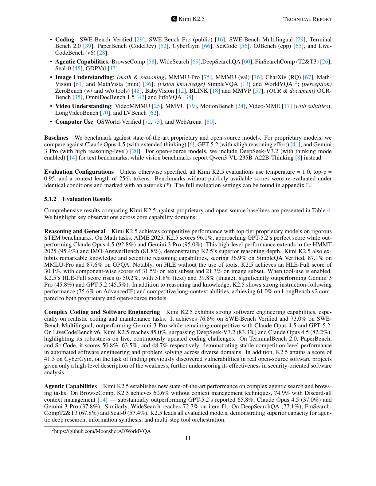
表 4 汇总闭源与开源模型的完整对比。K2.5 同时覆盖文本、代码、智能体、图像、视频和计算机操作；其中 Agent Swarm 在 BrowseComp 为 78.4，在 WideSearch 为 79.0。图像任务 MMMU-Pro、MathVision、OCRBench、InfoVQA 分别为 78.5、84.2、92.3、92.6；视频任务 VideoMMMU、MMVU、LongVideoBench、LVBench 分别为 86.6、80.4、79.8、75.9；OSWorld-Verified 与 WebArena 分别为 63.3、58.9。
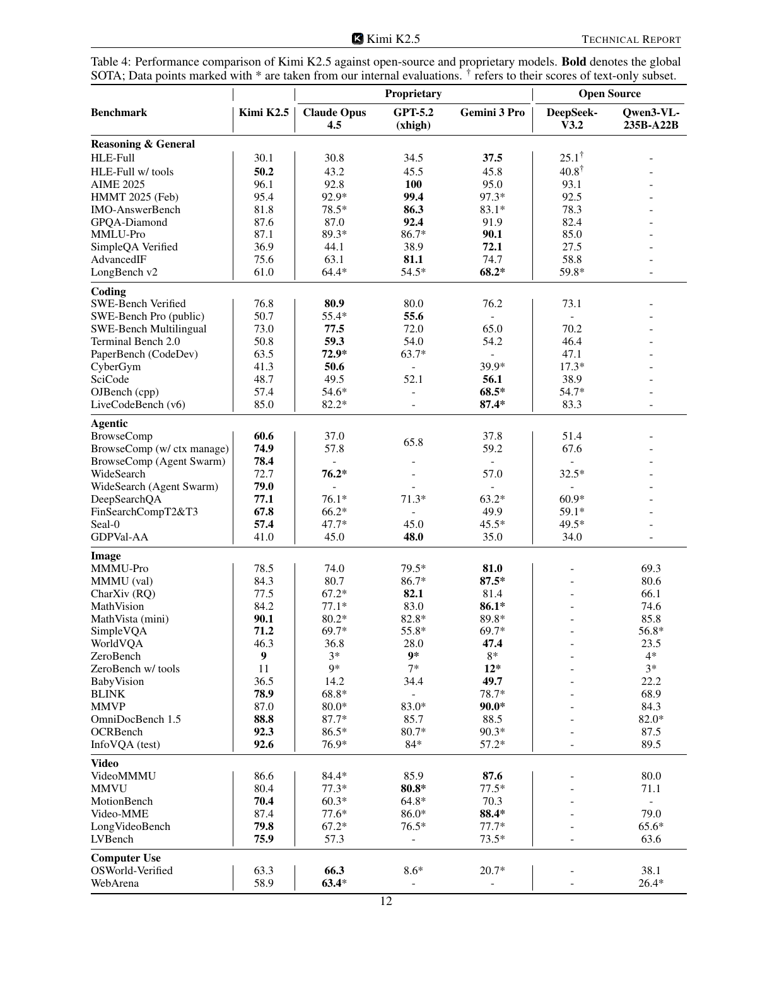
思考词元效率。 与 K2 Thinking 相比，K2.5 在多项难题上同时提升准确率并减少输出长度。例如 AIME 2025 为 96.1、平均 2.5 万输出词元，K2 Thinking 为 94.5、3 万词元；HMMT 2025 二月赛为 95.4、2.7 万词元，对比 89.4、3.5 万词元；LiveCodeBench 为 85.0、1.8 万词元，对比 82.6、2.5 万词元。
视觉推理与感知。 MMMU-Pro 为 78.5，SimpleVQA 与 WorldVQA 为 71.2、46.3，MathVision 与 MathVista mini 为 84.2、90.1。文档与 OCR 方面，CharXiv、OCRBench、OmniDocBench 1.5、InfoVQA 分别为 77.5、92.3、88.8、92.6。工具增强后的 ZeroBench 为 11，基础感知 BLINK 和 MMVP 为 78.9、87.0。
视频理解。 MoonViT-3D 的时间压缩让模型可输入超过 2000 帧；VideoMMMU、MMVU、MotionBench 达到 86.6、80.4、70.4，长视频 LVBench 与 LongVideoBench 达到 75.9、79.8。
计算机操作。 只使用 GUI 动作、不借助外部工具时，OSWorld-Verified 成功率为 63.3；WebArena 为 58.9。
5.2 Agent Swarm 结果
评测选择三个互补场景：需要多步推理和多源综合的 BrowseComp；强调广域、多步信息检索的 WideSearch；以及内部 Swarm Bench。内部基准包含 WildSearch、批量下载、超过 100 份输入文档的 WideRead，以及生成超过 10 万字连贯内容的长文写作。
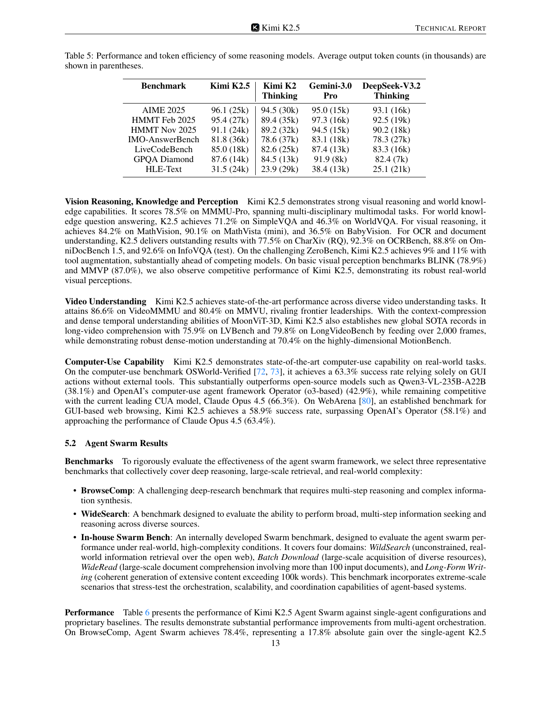
Agent Swarm 在 BrowseComp 达到 78.4，比单智能体 60.6 高 17.8 个百分点，并略高于表中 GPT-5.2 Pro 的 77.9；WideSearch 从 72.7 提高到 79.0，超过 Claude Opus 4.5 的 76.2；内部 Swarm Bench 从 41.6 提高到 58.3，增益 16.7 个百分点。适合广泛探索、多源核验或多个独立子任务的问题，受益最明显。
在 WideSearch 上，达到同一目标 Item-F1 时，Agent Swarm 比单智能体快约 3 到 4.5 倍。随着目标从 30% 提高到 70%，单智能体耗时从约 1.8 倍上升到 7 倍以上，而 Swarm 大致保持在 0.6 到 1.6 倍。
子智能体并非预先固定。编排器会随问题结构与状态动态决定数量、创建时点和专长，最终自然形成异构群体。
Agent Swarm 也可视为主动式上下文管理。Hide-Tool-Result、Summary 或 Discard-all 在上下文溢出后才压缩或丢弃历史，可能损失结构和中间推理；Swarm 则把长时程任务拆成语义隔离的局部上下文。子智能体保留独立工作记忆，只把任务相关结果送回编排器，形成“上下文分片”而非“上下文截断”。
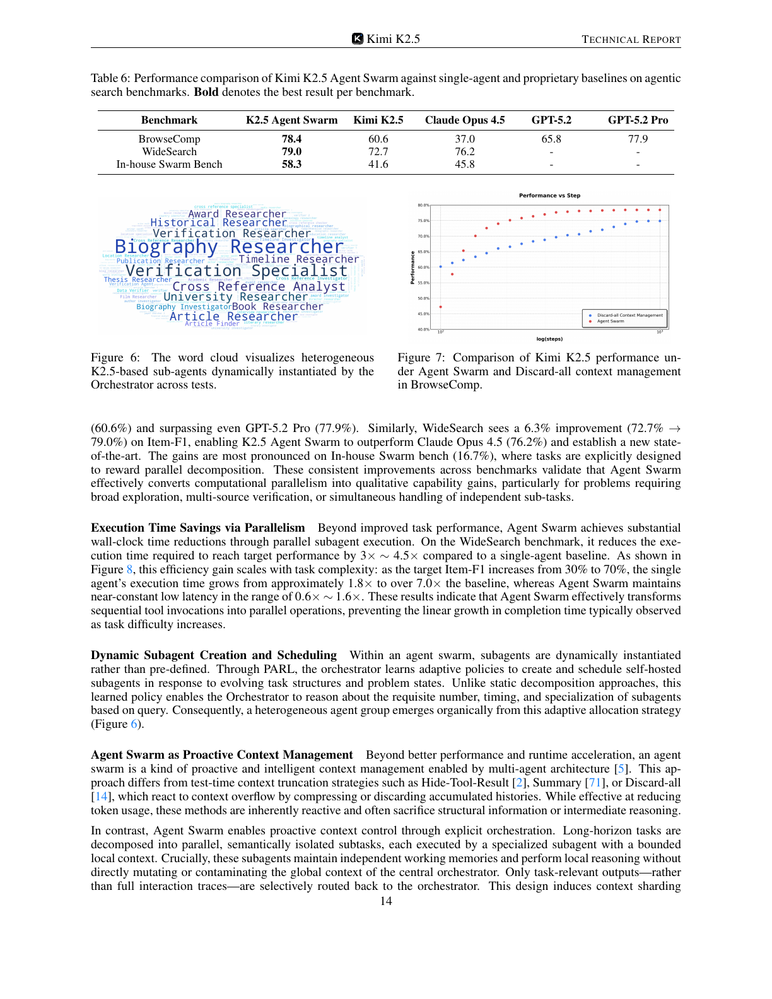
图 8 显示，在目标 Item-F1 从 30% 提高到 70% 的过程中，并行执行节省从约 3 倍扩大到 4.5 倍。BrowseComp 对比还表明，主动分片能以更少关键步数获得比 Discard-all 更高的准确率。
6 结论
Kimi K2.5 表明，联合优化文本与视觉，再配合并行智能体执行，可以形成可扩展、通用的智能体智能。统一图文预训练与强化学习带来强跨模态对齐；Agent Swarm 则并发执行异构子任务，在提升复杂智能体工作负载表现的同时降低推理延迟。团队公开后训练检查点，希望支持开源社区构建可扩展的通用智能体系统。
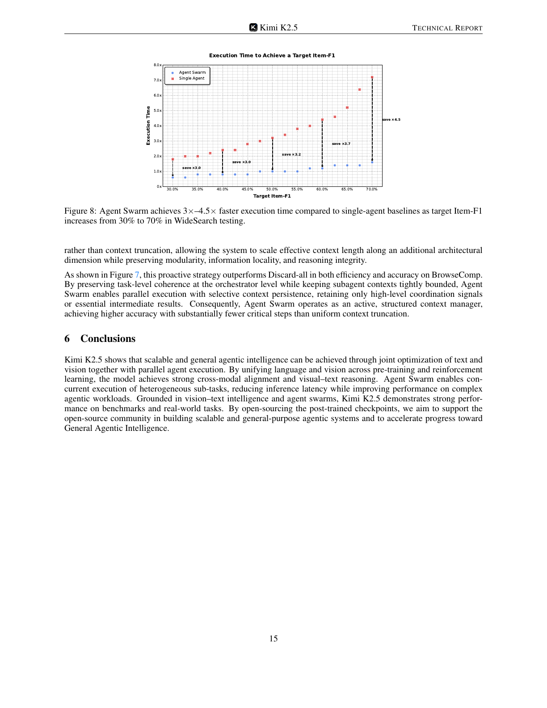
参考文献
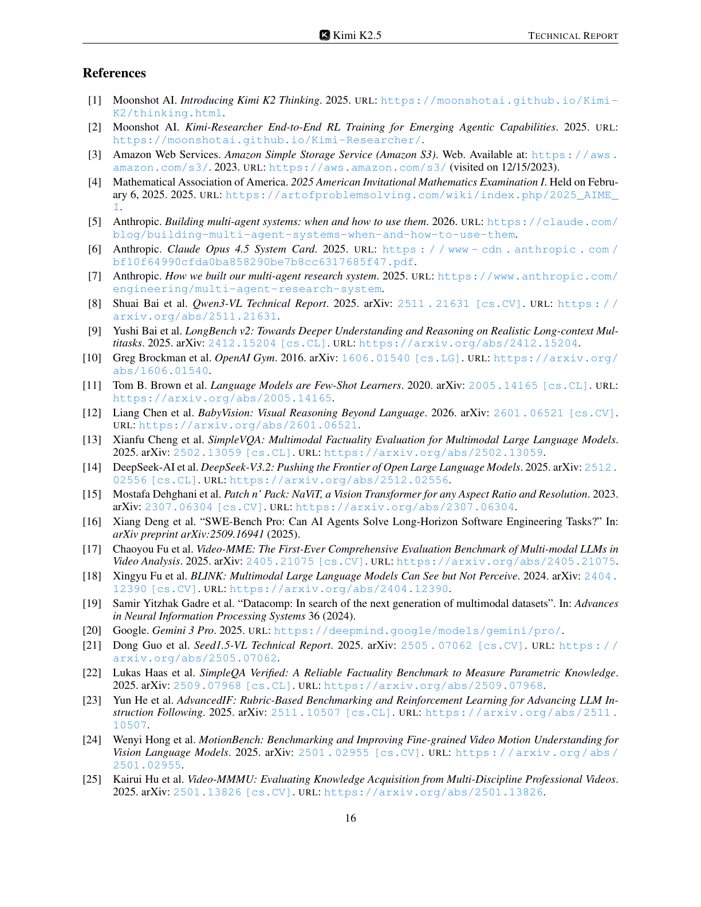
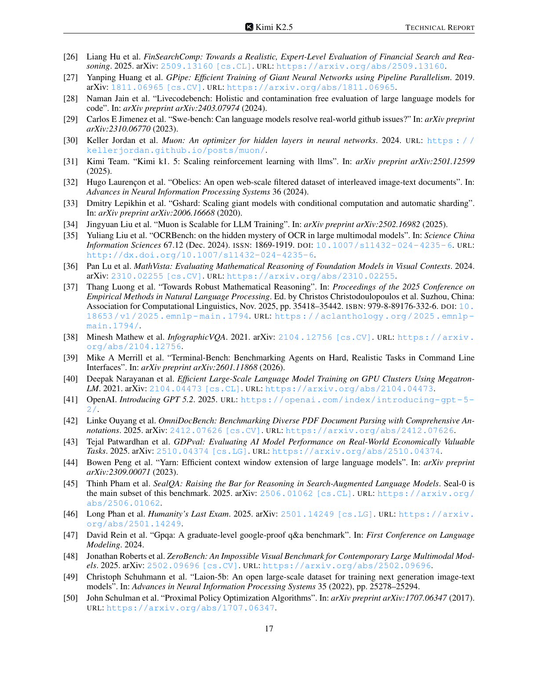
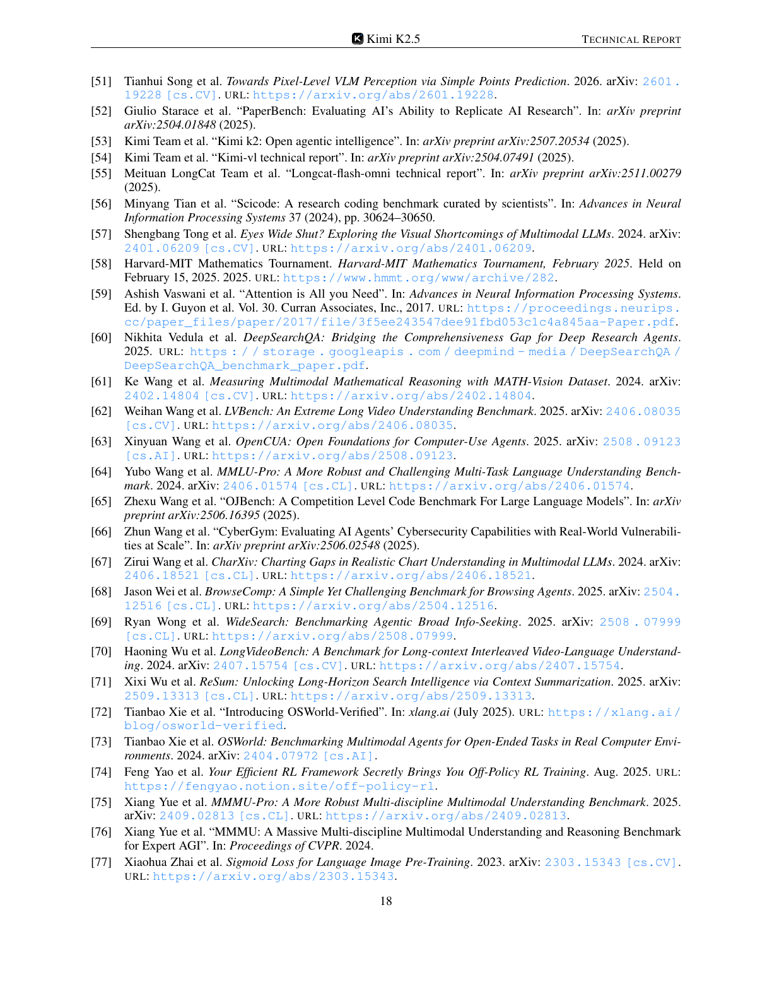
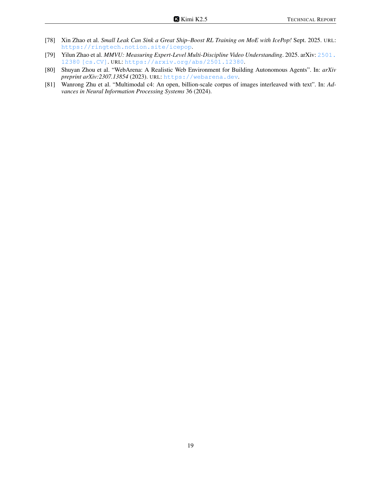
附录 A 贡献者
论文按姓氏字母顺序列出贡献者。完整名单保留在原页中。
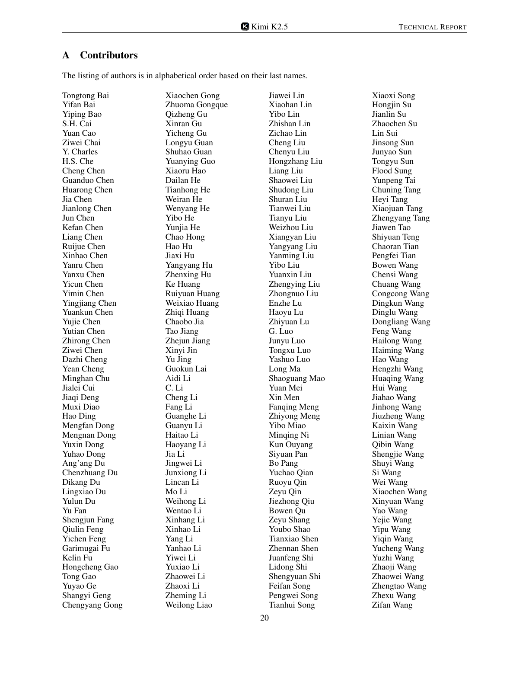
名单续页中注明 Tao Yu 来自香港大学，并将 Kimi K2 与 Kimi K2.5 也列为贡献者。
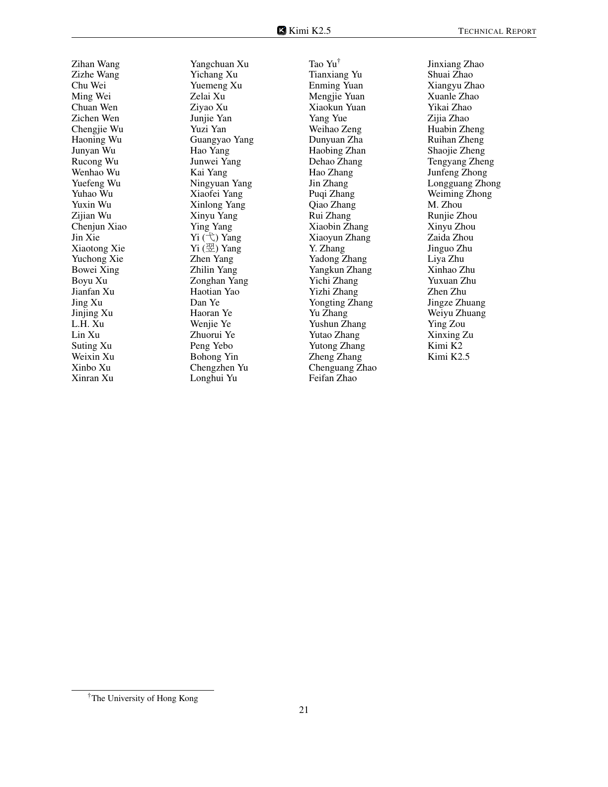
附录 B 预训练
B.1 联合训练
图 9 给出固定图文词元预算下，10:90、20:80、50:50 三种比例在视觉知识、视觉通用推理、OCR、文本知识、文本通用推理与代码上的完整学习曲线。
中期或后期才加入视觉数据时，文本表现会先下降再恢复。论文把这种“下探-恢复”归因于模态域迁移：视觉词元突然进入已经形成的语言表征空间，模型不得不暂时牺牲文本专长来完成跨模态对齐。早期融合从一开始共同优化图文，曲线更稳定，也避免后期表征迁移造成的冲击。
B.2 文本数据
文本语料仍由网页文本、代码、数学和知识四大领域构成，大部分处理沿用 Kimi K2。K2.5 提高代码数据权重，重点扩展三类材料：支持跨文件推理和架构理解的仓库级代码；真实 issue、代码审查和提交历史；从 PDF 与网页语料抽取的代码文档。这些数据增强仓库理解、补丁生成、单元测试编写和代码知识。
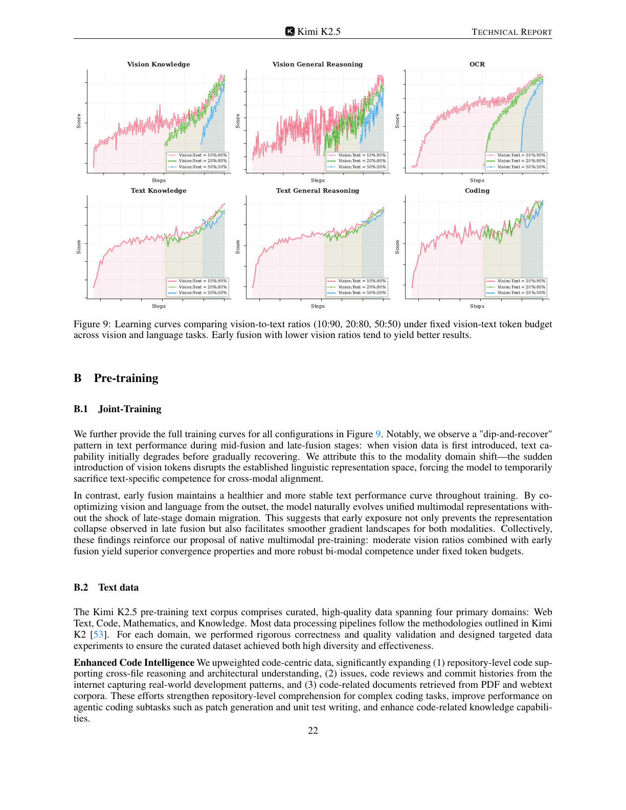
B.3 视觉数据
多模态语料分为描述、图文交错、OCR、知识、感知、视频和智能体七类。合成描述比例受到严格限制以降低幻觉；书籍、网页和教程中的交错数据用于多图理解与长上下文；OCR 覆盖多语言、密集排版和多页文档；学术材料经版面解析后用于视觉推理。
STEM 数据通过定向检索和网页抓取汇集，对没有显式问答格式的材料，再用上下文学习改写为从 K-12 到大学层次的结构化问题。大量 HTML、React、SVG 等代码与对应截图配对，使抽象结构逻辑对齐到具体视觉几何。GUI 截图与桌面、移动端、网页动作轨迹支持智能体训练；多源视频覆盖小时级理解和细粒度时空感知；定位框、点引用和轮廓级分割则加强像素级定位。
附录 C 基础设施
K2.5 在 NVIDIA H800 集群上训练，节点间为 8 路 400 Gbps RoCE。并行配置结合 16 路流水线并行、虚拟阶段、16 路专家并行和 ZeRO-1 数据并行，可使用任意 32 的倍数节点。系统在交错 1F1B 调度中重叠专家 all-to-all 与计算，并以选择性重计算、FP8-E4M3 激活压缩和 CPU 流式卸载控制显存。
C.1 数据存储与加载
视觉数据以原生格式存入兼容 S3 的对象存储。加载系统支持训练中动态洗牌、混合、分词、损失掩码与序列打包；可对图文随机增强，同时维护二维坐标和方向元数据；严格管理随机种子与工作进程状态，使中断恢复后的数据序列与未中断训练完全一致；多级缓存则让吞吐扩展到大型分布式集群，同时限制对象存储请求频率。统一平台还负责数据注册、可视化、统计、跨云同步和生命周期治理。
附录 D 统一智能体强化学习环境
统一框架提供类似 Gym 的标准接口，并把工具集、裁判、提示多样化和指令遵循增强等模块与核心智能体循环自由组合。
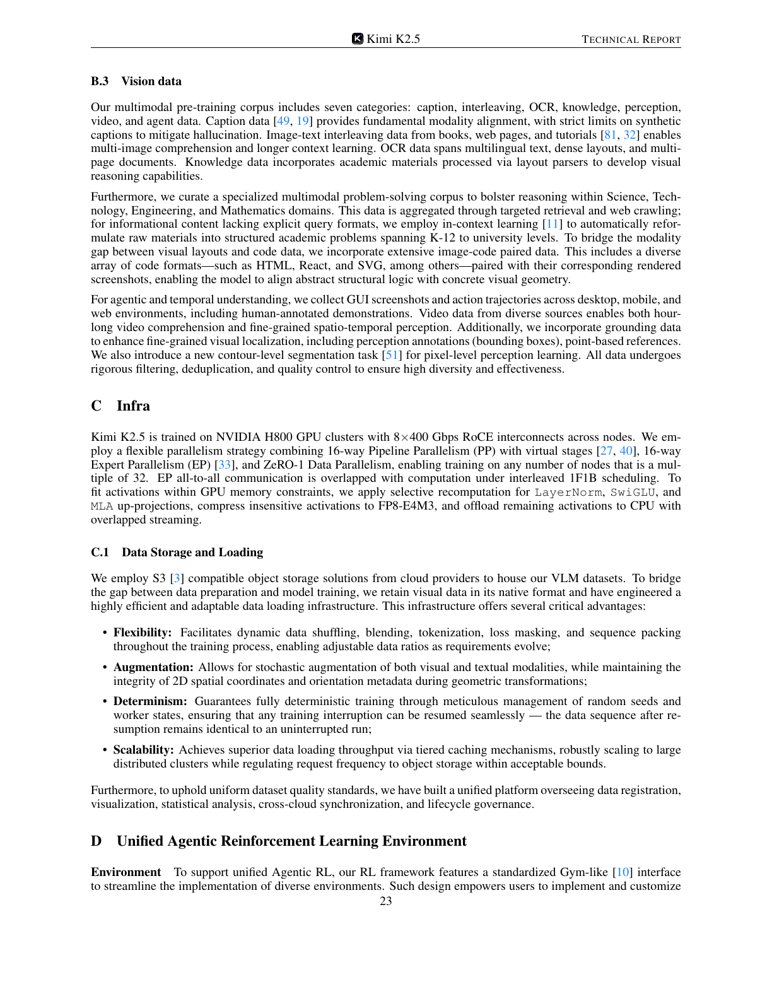
每个智能体任务都作为独立异步协程执行，并可递归启动子任务 rollout，便于实现 PARL 与 Agent-as-Judge。Rollout Manager 在强化学习过程中最多编排 10 万个并发任务，也支持部分 rollout；任务启动时从环境池取得带沙箱和专用工具的实例。
推理引擎遵循 Token-in-Token-out，并记录全部输出的对数概率，用于修正训练-推理不匹配。白盒环境可直接使用定制协议；只能通过标准语言模型 API 运行的黑盒环境则经 LLM Gateway 代理，保留完整请求与响应记录。系统还配套性能监控、剖析、数据可视化和验证工具，以调试高并发异步执行的效率与正确性。
附录 E 评测设置
E.1 通用协议
默认温度为 1.0，top-p 为 0.95，上下文长度为 256K。
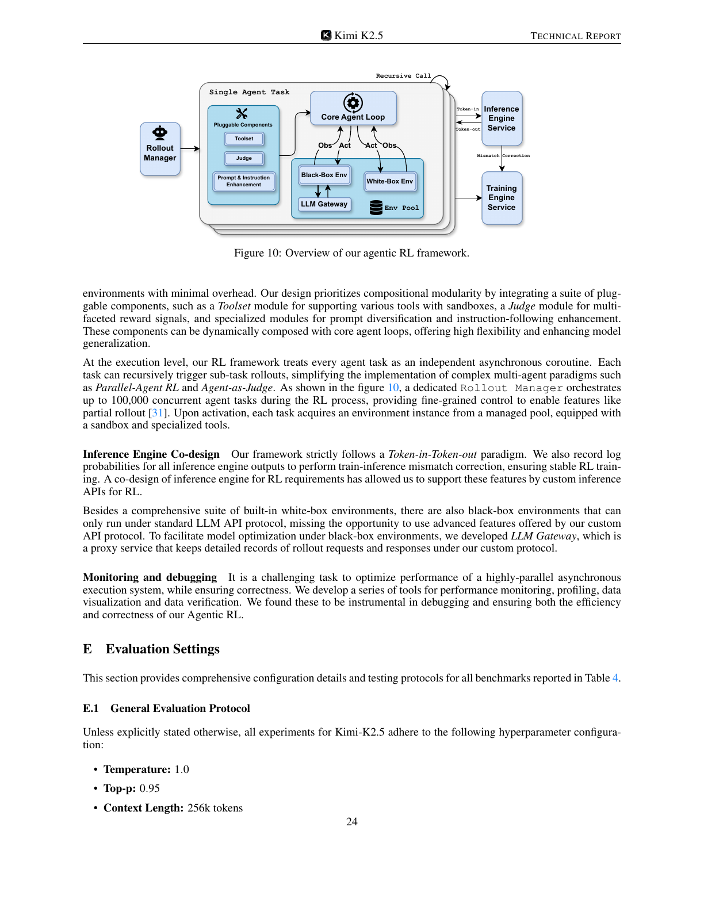
E.2 对比模型
闭源模型使用各自高性能推理配置。视觉评测中 GPT-5.2-xhigh 约有 10% 请求在三次重试后仍没有输出，这些样本按错误计，因此表中结果可能是保守下界；由于稳定 API 难以持续获得，WideSearch 等高成本评测未运行。
E.3 文本基准
HLE-Full、AIME 2025、HMMT 2025、GPQA-Diamond 和 IMO-AnswerBench 的最大生成预算为 96K。AIME 与 HMMT 二月赛取 64 次独立运行平均，GPQA-Diamond 取 8 次平均。LongBench v2 使用统一截断策略把输入规范到约 128K；GPT-5.2-xhigh 经常不按多选格式回答，因此该项改报格式更稳定的 GPT-5.2-high。
E.4 图像与视频基准
图像和视频最大生成 64K，并取 3 次运行平均。ZeroBench 工具模式每步最多 24K、最多 30 步。MMMU-Pro 严格保留官方多模态输入顺序。短视频统一采样 128 帧、最大分辨率 896；长视频采样 2048 帧、分辨率 448。OmniDocBench 以 $100\times(1-\text{归一化 Levenshtein 距离})$ 计分。
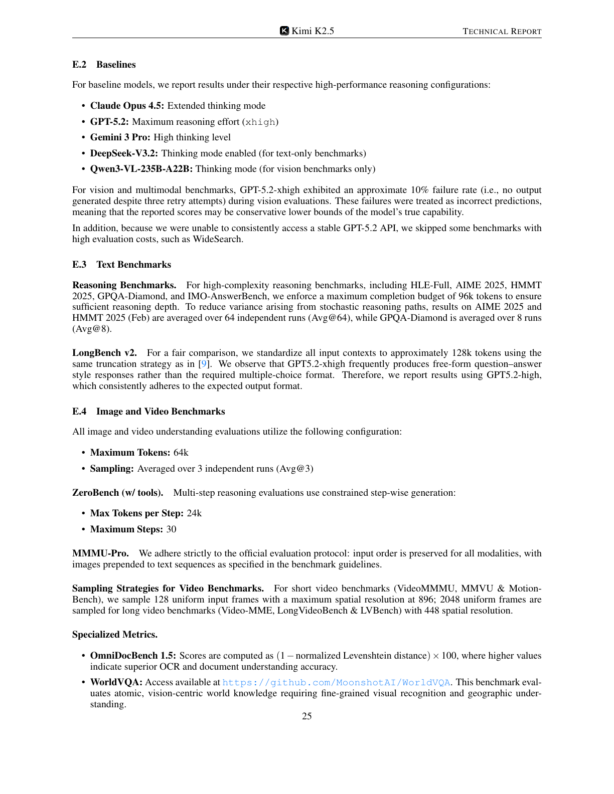
E.5 代码与软件工程
Terminal Bench 2.0 使用默认 Terminus-2 智能体和 JSON 解析器；由于思考模式的上下文管理与 Terminus-2 会话状态不兼容，K2.5 在此使用非思考模式。SWE-Bench 使用内部极简工具集，包含 bash、创建文件、插入、查看、字符串替换和提交，所有变体也以非思考模式表现最好。CyberGym 报告难度 1，PaperBench 报告 CodeDev 设置；代码任务均取 5 次独立运行平均。
E.6 智能体评测
智能体任务可用网页搜索、Python 解释器与浏览器。除特别说明外不做上下文管理，超出模型窗口直接计失败。HLE 工具模式采用 Hide-Tool-Result，只保留最近一轮工具消息，但保留全部思维历史；BrowseComp 同时报有无上下文管理结果，管理版本在超过阈值时使用 Discard-all 清除历史。
统一深度研究提示要求模型始终围绕原问题、对不确定信息主动搜索、优先高可信来源、数值计算优先使用程序工具、给出引用，并在最终回答前重新核对用户真正的问题。
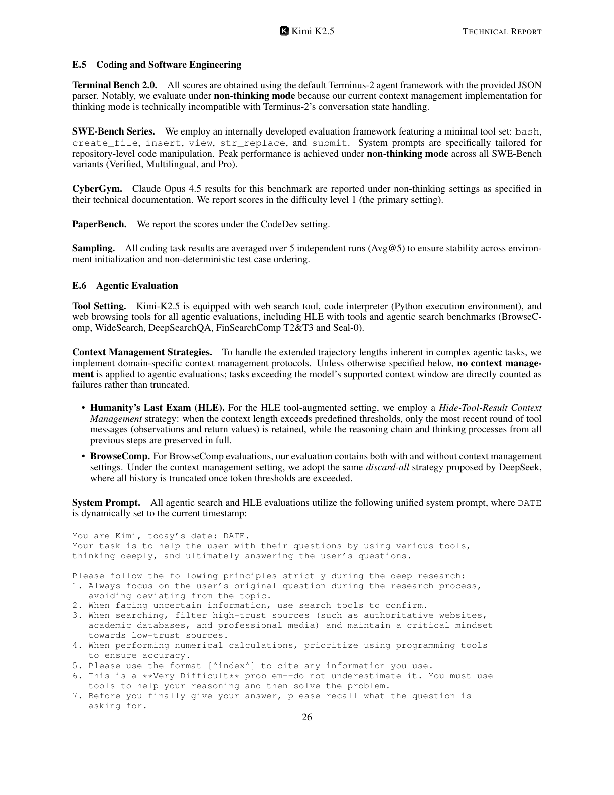
Seal-0 与 WideSearch 为降低搜索排序和动态网页带来的随机性，取 4 次独立运行平均；其他智能体基准默认单次运行。
E.7 计算机操作评测
所有任务最多 100 步；OSWorld-Verified 温度为 0，WebArena 为 0.1，均采用一次尝试。智能体上下文包含最近三张历史截图、完整思考历史和任务指令。WebArena 修正了评测脚本错误，并用 GPT-4o 判断模糊匹配；Claude Opus 4.5 只使用计算机操作工具，不使用浏览器工具。统一提示要求每一步输出思考、动作与代码，代码为 pyautogui 或等待、终止等规定函数。
E.8 Agent Swarm 配置
编排器除搜索、代码解释器和浏览器外，还有两个工具：create_subagent 用自定义名称和系统提示创建可复用子智能体，assign_task 向已创建智能体分派任务。
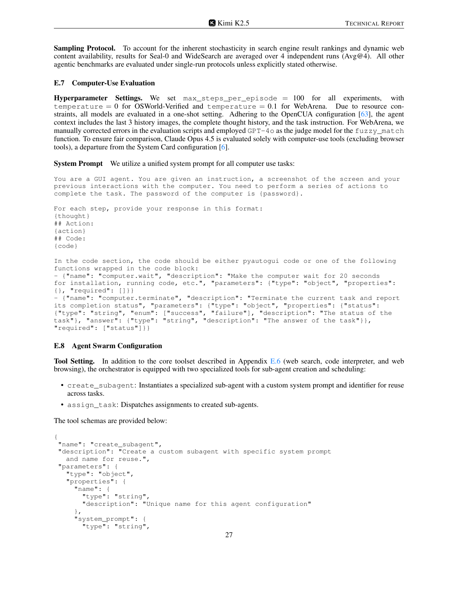
不同基准采用不同步数预算：BrowseComp 编排器最多 15 步，每个子智能体最多 100 步；WideSearch 两者均最多 100 步；内部基准编排器最多 100 步，每个子智能体最多 50 步。
系统提示把 Kimi 定义为严谨的信息收集与整理专家，要求先充分理解需求并规划最高效的完成方式；可使用并行搜索、网页访问、子智能体创建与分派、代码执行等工具。子智能体也可使用搜索和浏览器。
E.9 GDPVal
GDPVal-AA 采用 Artificial Analysis 的评测，表 4 分数对应 2026 年 1 月 28 日官方排行榜。
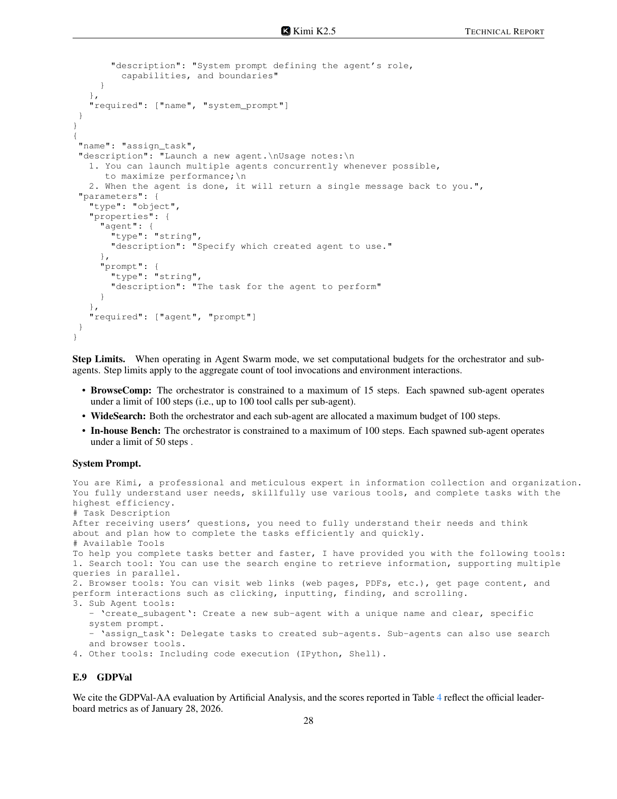
附录 F 可视化示例
图 11 展示 Agent Swarm 处理完整《黑神话：悟空》通关视频的案例：32 段 1080p 视频共 24 小时、约 40 GB。主智能体为每段视频创建并行子智能体；各子智能体独立抽帧、分析时间事件并识别首领战、升级等关键时刻，再把结构化结果返回主智能体。主智能体汇总全部分析，生成带时间线、内嵌视频片段和交互可视化的 HTML 页面。
该案例说明，并行视觉智能体可以把超大规模多模态内容拆分处理，同时由中心编排器维持全局时间顺序与长上下文一致性。
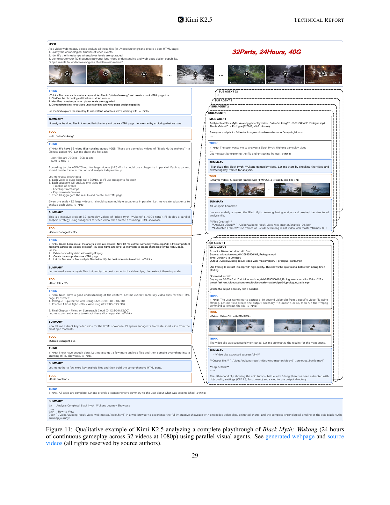
图 12 给出三类视觉工具推理：
- 迷宫求解。 图像二值化后用 BFS 寻找不穿墙的最短路径，并把 3288 个像素点的路线叠加回原图。
- 饼图分析。 转换到 HSV 空间，分别分割红、蓝、绿区域并统计像素，算得蓝色 23.4%、绿色 30.7%，合计 54.1%。
- 找不同。 对两幅图进行像素比较和轮廓提取，再把重叠候选框归并为主要差异并输出位置。
这些例子体现模型把视觉问题拆成可执行代码、依据中间结果迭代策略，并用定量分析合成精确答案的能力。
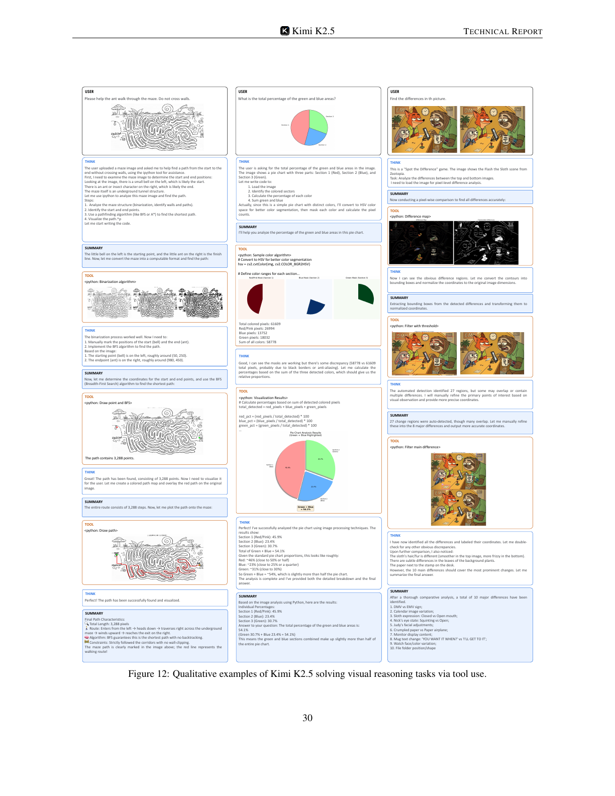
附录最后说明，《黑神话：悟空》案例中的各子智能体分别执行抽帧、时间事件分析和关键时刻识别，主智能体再生成完整交互展示；迷宫、饼图和找不同则分别对应路径规划、像素级颜色分割与几何计算、像素差异检测。
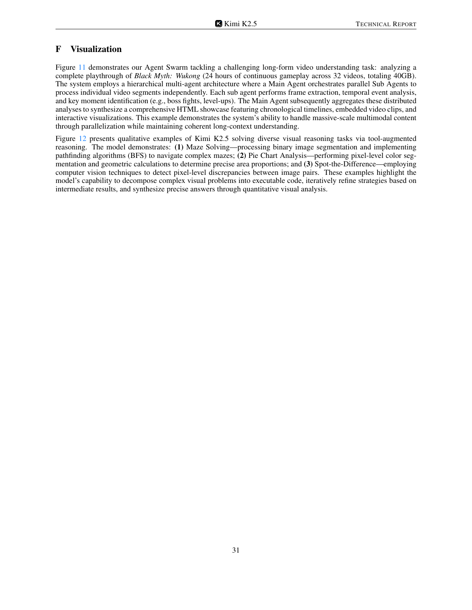